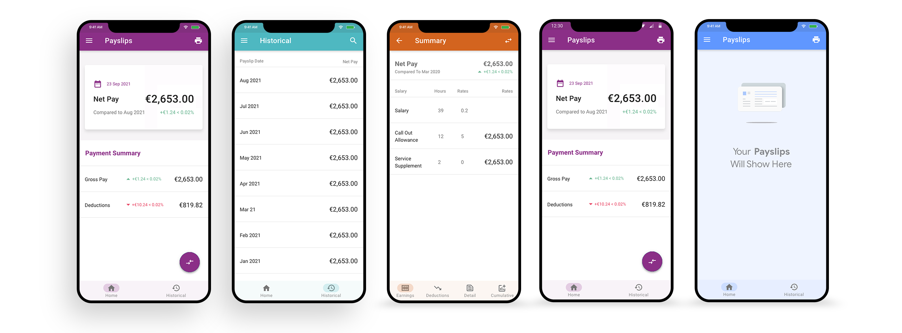
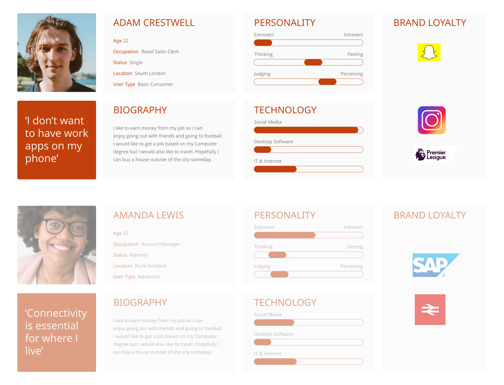
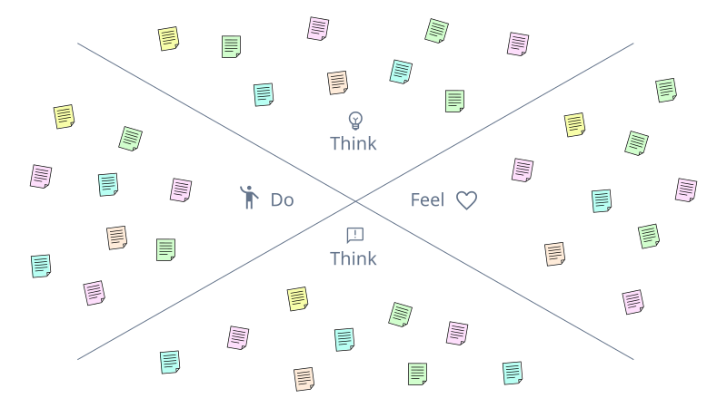

*Some screens and steps are concepts to protect IP
The payslip section of the Access Native App is a core feature available to most users, regardless of subscription tiers.
For a large percentage of users, viewing payslips—alongside booking time off and viewing team calendars—represents the primary experience within the app.
This employee self-service feature allows users to manage all aspects of what was historically a paper-based process.
User expectations include instant notifications of delivery, a clear understanding of payslip components, and the ability to search, view, and print historical records.

My primary focus was research gathering and stakeholder interviewing, collaborating closely with UI designers to translate findings into high-fidelity assets.
As is common in agile environments, I wore many hats, assisting with the physical design work, prototyping, and strategic roadmapping.
Previous iterations focused too heavily on visual interface at the expense of functional clarity. This design debt left users frustrated with a task that should have been simple and focused.
Research showed that users struggled to distinguish current payslips from historical ones and found the lack of a print option to be a major oversight.
The goal was to reverse this trend: reducing interface complexity while enriching the underlying user experience.
We identified potential users and grouped them into distinct personas.
*A single persona is shown here for brevity; in practice, multiple user and company personas were utilized.

We conducted between 5 to 10 user interviews per persona to ensure data validity.
Interviews were recorded and analyzed using Dovetail to track sentiment and common themes. I personally audit every transcript to ensure nuanced feedback isn't lost to automation.
We ran several unmoderated user tests using high-fidelity prototypes. This allowed us to validate interaction decisions with real audiences before a single line of production code was written.
These tests uncovered edge-case interactions that weren't initially considered. Validating these early significantly reduced the "cost to serve" by resolving usability issues during the design phase.
While this project had massive business implications, we were constrained by the need to maintain strict consistency with the existing design system.
The goal was to create a solution that was highly functional yet buildable within a tight development cycle. This was about optimization and refinement rather than reinventing the wheel.
Once we understood our users, we mapped their emotional journeys to better understand the connection—or friction—employees feel when using essential HR tools.

Deep user understanding was the catalyst for success. We learned that while users have different motivations for checking payslips, their functional needs are identical: speed, readability, and the ability to print.
We chose to redesign structural elements several times during the process. It is always more efficient to redesign a prototype than to build on top of a flawed foundation.
This project successfully demonstrated how user research generates tangible business value by aligning product features with actual consumer needs.